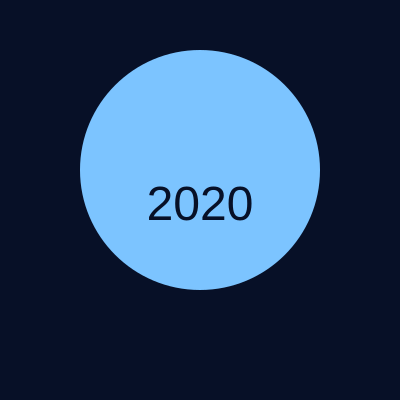
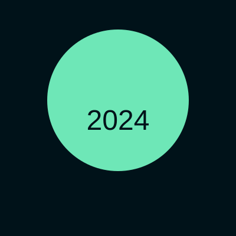

Quan13Dash GitHub
Home
About
Profile Pics
Profile Picture History
A short timeline showing how my profile picture changed over time.
June 2018 — Early pixel me

Sept 2020 — experimenting with color

Mar 2024 — current avatar
✕